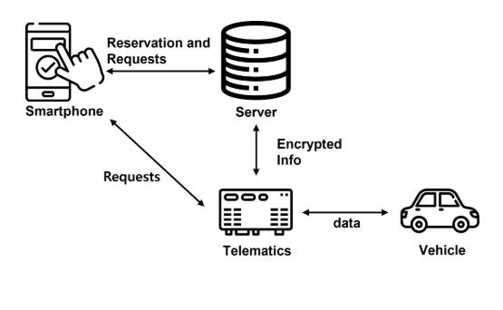
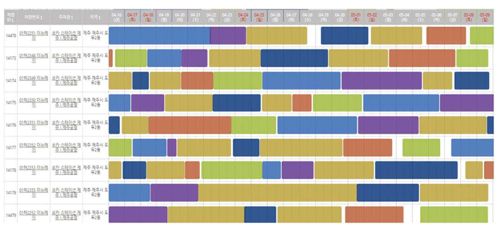
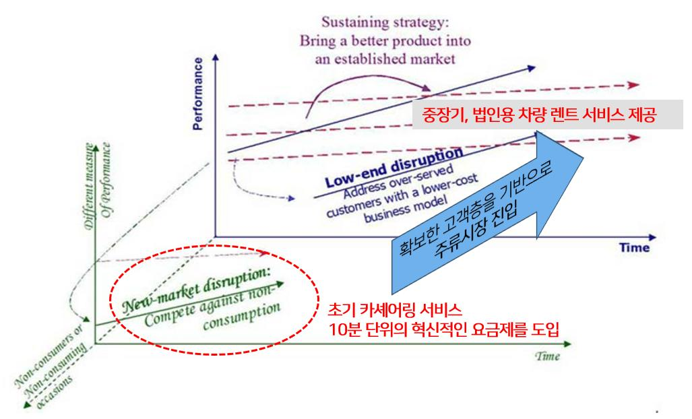
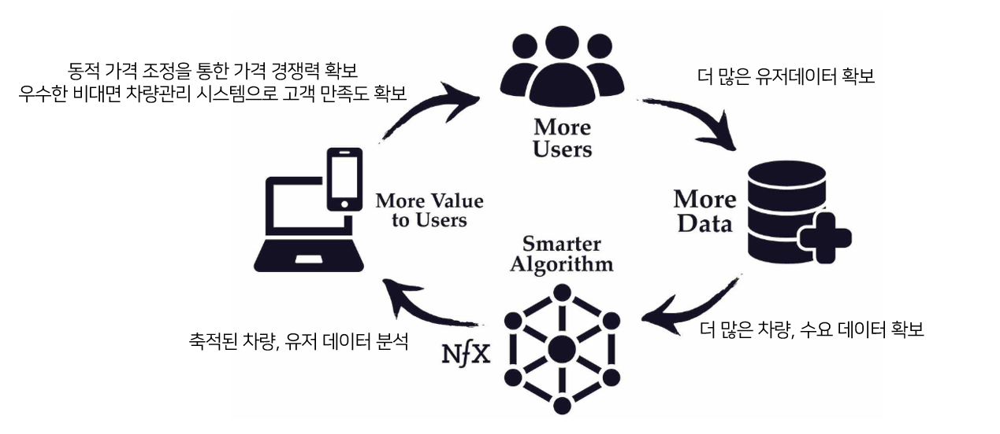

국내 모빌리티 시장에서 소유에서 공유로의 패러다임 전환이 가속화되는 가운데, 2011년 그린카보다 늦게 시장에 진입한 후발주자 쏘카는 2014년부터 매출을 역전하며 국내 카셰어링 시장 점유율 80%대의 압도적 1위 기업으로 자리매김했다. 본 연구는 쏘카가 카셰어링 산업 내에서 구축한 혁신적 비즈니스 모델이 무엇인지 알아보고, 이러한 경쟁우위를 확보할 수 있었던 핵심 요인을 파괴적 혁신 이론과 네트워크 효과 이론을 중심으로 분석한다.
- 국내 모빌리티 시장에서 소유에서 공유로의 패러다임 전환이 가속화되는 가운데, 쏘카는 그린카보다 늦게 진입한 후발주자임에도 디지털 기술을 활용한 차별화 전략으로 단기간에 카셰어링 산업의 압도적 시장점유율을 확보했다.
- 본 연구는 쏘카가 카셰어링 산업 내에서 구축한 혁신적 비즈니스 모델이 무엇인지 알아보고, 이러한 경쟁우위를 확보할 수 있었던 핵심 요인을 분석했다.
- 쏘카는 기존 렌터카 시장이 충족시키지 못하던 초단기 이동 수요라는 미충족 니즈를 정확히 포착하고, 밸류체인의 핵심 접점에 IoT 기술을 전략적으로 접목함으로써 사용자 경험을 혁신했다.
- 또한 데이터 기반의 네트워크 효과를 창출하는 선순환 구조를 구축하여 지속가능한 경쟁우위를 확보할 수 있었다.
- 쏘카의 사례는 디지털 전환 시대에 후발주자라 할지라도 산업 구조에 대한 깊은 이해와 전략적 기술 적용을 통해 시장을 선도할 수 있음을 시사한다.
1. 서론
모빌리티 산업은 지난 10년간 디지털 기술의 발전과 소비자 행동 패턴의 변화로 급격한 혁신의 물결을 경험하고 있다. 한국의 도시 환경에서 주차 공간 부족, 차량 유지비용 증가, 환경 문제에 대한 인식 확대는 전통적인 자동차 소유 개념에서 벗어난 새로운 모빌리티 서비스의 필요성을 증대시켰다.
이러한 배경 속에서 2011년 국내 카셰어링 시장의 후발주자로 등장한 쏘카는 IoT 기술과 차량원격제어시스템을 기반으로, 물리적 키 없이 스마트폰 앱만으로 차량을 이용할 수 있는 완전한 무인 서비스 시스템과 데이터 기반 차량 배치 최적화 전략으로 기존 렌터카와 차별화된 가치를 창출했다. 그린카보다 늦게 진입했음에도 2014년부터 매출을 역전했고, 2023년 4월 기준 국내 카셰어링 시장의 83.4%를 차지하는 업계 1위 브랜드로 자리매김했다.
2. 이론적 배경
2.1 카셰어링 서비스의 정의
카셰어링(Car Sharing)은 자동차를 소유하지 않고 필요한 시간만큼 대여·이용하는 서비스로, 공유경제의 대표적인 모델이다. 기존 렌터카가 일·월 단위 대여, 영업시간 내 대면 계약, 지정된 지점에서의 인수·반납을 요구하는 반면, 카셰어링은 시간(분·시간) 단위 요금제, 24시간 무인 비대면 서비스, 도심 곳곳에 분산된 거점을 특징으로 한다. 기존 렌터카 기업들이 대도시·관광지에 지점을 집중하는 '소거점 다수차량' 전략을 채택한 것과 달리, 카셰어링은 도심 내 다수의 소규모 거점을 확보하는 '다거점 소수차량' 전략으로 접근성을 극대화했다.
2.2 카셰어링 산업 현황
카셰어링은 1948년 스위스 취리히의 협동조합 'Sefage'에서 개념이 처음 등장했고, 본격적인 사업화는 1990년대 이후 유럽과 북미에서 이루어졌다. 2024년 독일의 카셰어링 등록 이용자는 550만 명을 돌파했고, 미국 시장 규모는 31억 달러로 추정된다. Statista에 따르면 전 세계 카셰어링 시장은 2029년 157억 8천만 달러, 이용자 약 6,819만 명 규모로 확대될 전망이다. 국내에서는 2011년 10월 그린카, 같은 해 12월 쏘카(제주도 중심)가 상업적 서비스를 개시했으며, 서울시 나눔카 등 공공-민간 협력 모델이 초기 인프라 구축과 대중화에 기여했다. 현재 국내 시장은 쏘카(누적 회원 약 1,350만 명, 점유율 80%대)와 그린카(2023년 12월 기준 약 22.4%)의 과점 구조로, 쏘카는 2024년 매출 4,317억 원(카셰어링 부문 3,711억 원)을 기록한 반면 그린카는 3년 연속 적자를 기록하며 격차가 확대되고 있다.
2.3 파괴적 혁신
파괴적 혁신(Disruptive Innovation)은 Christensen(2013)이 제시한 이론으로, 처음에는 성능이 떨어지거나 단순하지만 가격·편의성·단순함과 같은 새로운 가치 제안으로 시장에 진입하여 점차 주류 시장까지 잠식하는 혁신이다. 기존 기업들이 제품 성능을 고객의 실제 필요 이상으로 개선하는 오버슈트(Overshoot) 현상이 파괴적 혁신이 진입할 기회의 창을 만든다. 파괴적 혁신은 기존 시장의 하위 고객층을 겨냥하는 로우엔드(Low-end) 파괴와, 이전에 소비하지 않던 비소비자(non-consumers)를 새로운 고객으로 창출하는 신시장(New-market) 파괴의 두 경로로 발생한다.
2.4 네트워크 효과 이론
네트워크 효과는 제품이나 서비스의 가치가 사용자 수에 따라 변화하는 경제적 현상으로, Katz와 Shapiro(1985)는 이를 "제품이나 서비스를 사용하는 소비자 수가 늘어날수록 기존 소비자들의 효용도 함께 증가하는 현상"으로 정의했다. 메칼프의 법칙(V=n²)에 따르면 네트워크 사용자가 10배 증가하면 네트워크 가치는 100배 증가한다. 네트워크 효과가 강한 플랫폼 비즈니스에서는 잠금 효과(Lock-in Effects)와 전환 비용(Switching Costs)이 중요한 경쟁우위 요소로 작용하며, 이들의 상호작용이 '승자독식'에 가까운 시장 구조를 형성한다.
3. 사례 분석
3.1 쏘카 기업 개요
쏘카는 2011년 창업주 김지만에 의해 설립되어, '모든 사람이 자동차를 소유하지 않고도 필요할 때 편리하게 이용할 수 있는 세상'이라는 비전 아래 대중교통 인프라가 부족한 제주도에서 100대의 차량으로 서비스를 시작했다. 성장과정은 창업 및 서비스 출시(2011-2012), 서비스 확대 및 성장(2013-2017), M&A 및 사업다각화(2018-2019), MaaS 생태계 확장(2020-현재)의 네 단계로 구분된다. 2015년 서울시 나눔카 사업자 선정으로 공영주차장 사용권을 확보해 매출이 2014년 146억 원에서 2015년 487억 원으로 230% 성장했고, SK와 베인캐피탈로부터 650억 원 규모의 투자를 유치했다. 이후 VCNC 인수를 통한 타다 출시, 라이드플럭스 투자, 차케어·폴라리언스 인수, 쏘카비즈니스·쏘카플랜·쏘카패스 출시로 사업을 다각화했으며, 2020년 국내 모빌리티 기업 최초로 유니콘(기업가치 1조 원)에 등극하고 2022년 코스피에 상장했다.
3.2 쏘카의 카셰어링 서비스
3.2.1 IoT 기반 차량 원격 제어
쏘카 서비스의 중추는 일반 차량을 카셰어링에 적합한 형태로 전환하는 '관제장치(Telematics Device)'다. 관제장치는 차량의 위치·작동 상태·주유량·문 잠금 상태 등을 실시간 수집하고, 스마트키 없이 스마트폰 앱으로 차 문을 열고 잠그는 원격 제어를 수행하며, LTE/3G 통신을 기본으로 하되 통신 음영 지역을 위해 BLE 5.0 블루투스 통신 기능도 갖춰 지하주차장·산지·바다 지역에서도 문제없이 차량을 제어할 수 있다. 쏘카가 자체 개발한 관제장치는 2020년 첫 도입 이후 10,000대 이상의 차량에 장착되어 약 6천만 시간 동안 57만 명 고객의 176만 번 차량 운행을 지원했고, 2억 km 주행 거리 동안 3천만 번의 제어를 수행하며 6억 개의 데이터셋을 수집했다.

3.2.2 데이터 기반 수요 예측
쏘카는 차량 데이터(위치·속도·주행거리·연료 상태), 사용자 데이터(이용 패턴·선호 차종·이용 시간대), 환경 데이터(기상·교통)를 실시간 수집·분석하고, 자체 구축한 차량 관제·관리 시스템(FMS, Fleet Management System)으로 2만여 대의 차량을 실시간 관리한다. 지역별·시간대별 수요 예측 모델로 이용률이 낮은 지역의 차량을 회수해 수요가 높은 지역으로 재배치하고, 예약을 차량의 빈 시간대에 차곡차곡 정리하는 '예약 테트리스'로 유휴 시간을 최소화한다. 수요-공급 상황에 따라 실시간 가격을 최대 30%까지 조정하는 동적 가격 조정(dynamic pricing)도 활용한다. 그 결과 2014년에는 직원 1명이 50대의 차량을 관리했으나 2023년에는 1,000대를 관리할 수 있을 정도로 운영 효율성이 향상되었고, 차량 1대당 평균 가동률은 2018년 28.8%에서 2020년 36.9%로 개선됐다.

3.2.3 AI 기반 차량 관리
약 2만 대의 차량을 효율적으로 관리하기 위해 쏘카는 AI 비전 기술로 고객이 앱에 업로드한 사진을 분석해 차량 손상 여부를 자동 진단하는 '차량 파손 탐지 시스템(엑시다)', 딥러닝 모델이 오염 상태와 심도를 판별하고 기상청 API의 강수 예보까지 반영해 세차 시점을 결정하는 '세차 오퍼레이션', 자회사 차케어가 개발해 부품 주문·교체 프로세스를 자동화한 차량 관리 플랫폼 '유레카(URECA)'를 운영한다. AI 도입 이후 차량 세차비 14%, 유지비 4%, 점검비 11% 등 실질적 비용 절감 효과가 나타났다.
3.3 쏘카의 경영 성과
쏘카는 기존 렌터카 비사용자층을 새로운 소비자로 끌어들이며 단거리·초단기 대여라는 새로운 시장 영역을 개척했다. 단기렌터카 시장에서 24시간 이내 대여 비중은 2022년 1-8월 22.5%에서 2023년 동기간 29.0%로 상승했고, 롯데렌탈의 그린카 인수와 차량 관리 비대면화, 현대캐피탈의 디지털 키 도입 등 산업 전반의 디지털 전환도 가속화됐다. 쏘카 자신은 2023년 3분기 결제금액 기준 국내 카셰어링 시장의 83.27%를 점유하며 그린카(16.73%)를 큰 격차로 따돌렸다. 회원수는 2014년 15만 명에서 2023년 1,100만 명으로 73배 이상 증가했으며, 현재 약 2만 4천 대의 차량을 보유하고 있다. 나아가 자체 개발 FMS의 외부 판매를 통한 B2B 진출, 운전 데이터 기반 신용평가모델과 보험·금융 상품 연계, 일레클·모두의 주차장 등 연계 서비스로 종합 모빌리티 플랫폼으로 진화하고 있다.
4. 연구결과 및 시사점
4.1 연구결과
쏘카는 IoT 기술과 차량원격제어시스템을 기반으로 한 비대면 카셰어링 서비스를 통해 기존 렌터카 시장이 충족시키지 못하던 단기 이동 수요를 발굴하며 신시장 파괴형 혁신(New-Market Disruptive Innovation)을 성공적으로 구현했다. 10분 단위 요금제라는 혁신적 모델로 초기에는 기존에 렌터카를 이용하지 않던 비소비자층을 새로운 고객으로 전환시켰고, 이후 서비스 품질을 향상시키고 차량 라인업을 다양화하며 법인 차량 대여와 일·월 단위 대여 등 기존 렌터카 기업들의 영역까지 성공적으로 진출했다. 기존 렌터카 기업들은 시간·장소·지역별로 크게 변동하는 초단기 수요에 즉각 대응할 데이터 관리 시스템과 대응조직이 부재하여 결국 시장 주도권을 내어줄 수밖에 없었다.

사업 초기 서울시 나눔카 선정으로 동반 성장의 기회를 얻었던 쏘카와 그린카의 이후 경로는 크게 달라졌다. 그린카는 롯데렌탈 자회사로 편입되며 IoT 고도화나 데이터 활용보다 법인 기업 위주 서비스에 집중한 반면, 쏘카는 지속적인 서비스 고도화와 기술 혁신에 투자하며 개인 소비자 중심의 사용자 경험 개선에 주력했다. 쏘카의 성공은 네트워크 효과를 활용한 선순환 구조 구축에 있다. 더 많은 사용자가 유입될수록 더 많은 데이터가 축적되고, 알고리즘 고도화를 통해 차량 배치 최적화·수요 예측·가격 정책이 개선되어 사용자에게 더 높은 가치를 제공하는 양의 피드백 루프가 형성된 것이다.

4.2 시사점
- 미충족 니즈의 발굴: 쏘카는 기존 업체들이 수익성이 낮다고 간주하여 충족시키지 않던 초단기 이동 수요를 정확히 포착해 10분 단위 요금제와 무인 대여 시스템을 결합한 서비스 모델로 충족시켰다. 혁신 기업에게는 지배적 플레이어와의 정면 경쟁보다 그들이 간과한 미충족 니즈와 블루오션을 발굴해 새로운 시장을 창출하는 전략이 효과적일 수 있다.
- 핵심 접점에의 전략적 기술 접목: 쏘카는 가장 큰 마찰과 비효율이 발생하는 '차량 대여·반납 과정'이라는 핵심 접점에 IoT 기술을 접목해 프로세스를 획기적으로 간소화했다. 기술 자체보다 그 기술이 적용될 산업 구조와 밸류체인에 대한 깊은 이해가 선행되어야 하며, 모든 영역을 동시에 바꾸기보다 임팩트가 가장 큰 지점에 집중하는 접근이 중요하다.
- 데이터 선순환의 경쟁우위: 사용자–데이터–알고리즘의 선순환으로 형성된 네트워크 효과와 락인 효과는 후발주자였던 쏘카가 시장 패러다임을 바꾸고 1위 기업으로 자리매김하게 한 지속가능한 경쟁우위의 원천이었다.